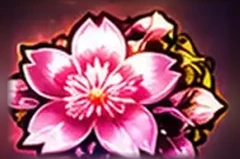
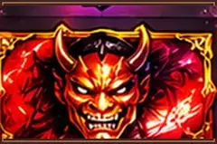

龍運金殿・樣式預覽・非正式遊戲
寶珠對碰・金殿寶石方案
現行寶珠偏琺瑯牌面，與金殿雕刻金框還有一段距離。以下兩個方案只改寶珠、點亮狀態與井格，光暈預先畫進圖檔，不用即時模糊。本頁尚未套用到正式遊戲，機率與 RTP 不變。
僅供娛樂・虛擬籌碼・純虛擬・無兌現
兩種方案
- 方案 A・金托切面：雕刻金托與朱紅琺瑯槽，中間是切面寶石（琥珀、藍寶、翡翠、紅寶、火珀、珍珠），光暈畫在圖裡。
- 方案 B・金爪龍珠：同一套金托，改以金爪托住有體積的龍珠，光暈同樣預先畫進圖檔。
- 琥珀・價值
- 藍寶・迷你
- 翡翠・小獎
- 紅寶・大獎
- 火珀・聚寶
- 珍珠・巨獎
現行
琺瑯牌面，即時內陰影與光暈
空井・主題圖






剩餘重轉 3累計 240
點亮寶珠
4080120迷你大獎聚寶80小獎巨獎
120迷你大獎聚寶80小獎巨獎剩餘重轉 3累計 240
開獎
4080120迷你大獎聚寶80小獎巨獎
120迷你大獎聚寶80小獎巨獎剩餘重轉 3累計 240
寶珠總獎金12,000
方案 A
金托切面寶石，光暈預繪
空井・主題圖
剩餘重轉 3累計 240
點亮寶珠
4080120迷你大獎聚寶80小獎巨獎
120迷你大獎聚寶80小獎巨獎剩餘重轉 3累計 240
開獎
4080120迷你大獎聚寶80小獎巨獎
120迷你大獎聚寶80小獎巨獎剩餘重轉 3累計 240
寶珠總獎金12,000
方案 B
金爪龍珠，光暈預繪
空井・主題圖
剩餘重轉 3累計 240
點亮寶珠
4080120迷你大獎聚寶80小獎巨獎
120迷你大獎聚寶80小獎巨獎剩餘重轉 3累計 240
開獎
4080120迷你大獎聚寶80小獎巨獎
120迷你大獎聚寶80小獎巨獎剩餘重轉 3累計 240
寶珠總獎金12,000
正式套用時，井格與點亮寶珠改為一張預繪 webp，不再對每格套即時模糊陰影或掃光動畫，預期進場最差幀可維持在目前 v28.125 水準或更好。空井仍顯示主題圖。請挑一個方案，或告訴我要調整的地方。